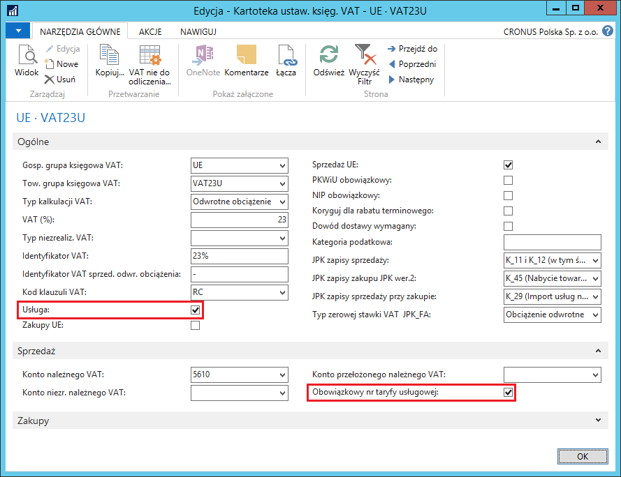
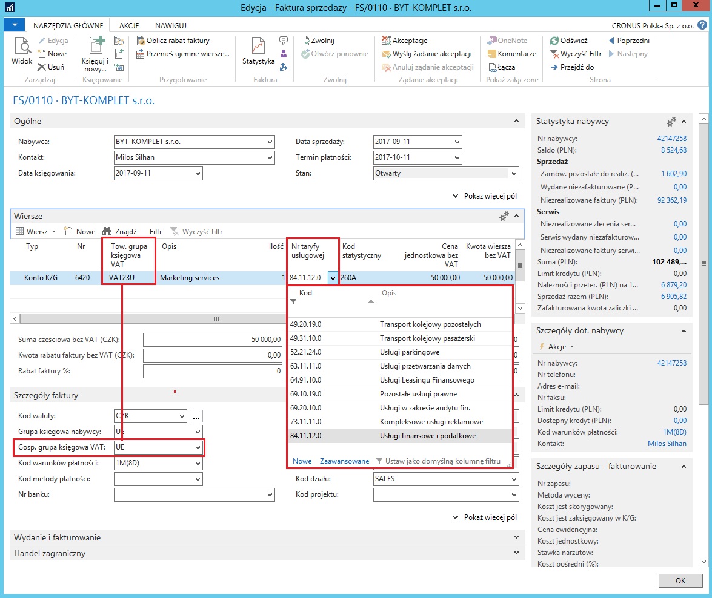
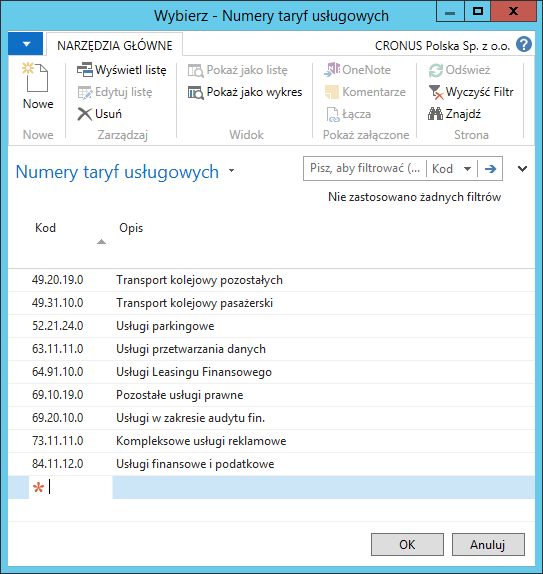
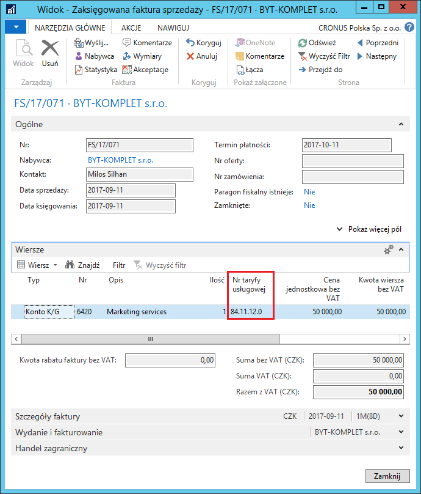
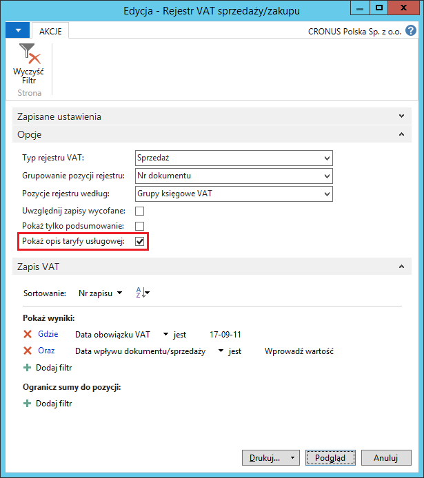
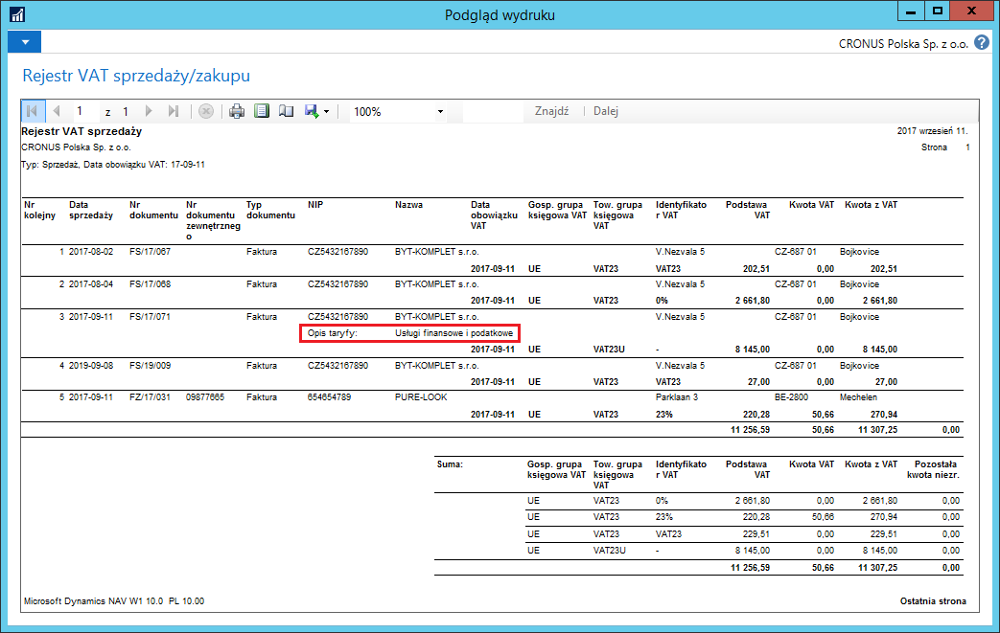

Nr taryfy usługowej
Informacje ogólne
Dla niektórych transakcji sprzedaży usług poza granice Polski, w rejestrze VAT należy podać krótki opis świadczonej usługi dla celów badania poprawności kalkulacji VAT. Celem funkcjonalności numeru taryfy usługowej jest udostępnienie użytkownikom listy takich opisów i możliwości ich przypisania do wybranych transakcji.
Ustawienia
Numery taryf usługowych mogą być przypisywane w wierszach dokumentów sprzedaży wyłącznie dla wybranych ustawień VAT, w tym celu należy postępować według następujących kroków:
Należy wybrać Działy > Zarządzanie Finansami > Administracja > Ustawienia księgowe VAT.
W oknie Ustawienia księgowe VAT, które się otworzy, należy zaznaczyć wiersz z wybraną kombinacją kodów w polach Gosp. grupa księgowa VAT i Tow. grupa księgowa VAT, a następnie wybrać Edycja.
W oknie Kartoteka ustaw. księg. VAT, które się otworzy, na karcie skróconej Ogólne należy zaznaczyć pole Usługa, pole Obowiązkowy numer taryfy usługowej zostanie automatycznie zaznaczone.

Obsługa
Przypisanie numeru taryfy usługowej możliwe jest w dokumentach sprzedaży. W tym celu należy postępować według następujących kroków:
Należy wybrać Działy > Zarządzanie Finansami > Należności > Faktury sprzedaży.
Należy w sposób standardowy wprowadzić dane do faktury sprzedaży. Konieczne jest użycie właściwej kombinacji grup księgowych VAT, dzięki czemu możliwe jest wybranie jednej z taryf z listy rozwijanej w polu Nr taryfy usługowej w wierszach faktury sprzedaży:

- W przypadku, gdy na liście rozwijanej w polu Nr taryfy usługowej nie ma pożądanej taryfy, można ją wprowadzić wybierając Nowe. Otworzy się wtedy okno Numery taryf usługowych, w którym, w nowym wierszu, należy wprowadzić unikalny kod oraz pełny opis nowej taryfy usługowej:

Pozostałe dane do faktury sprzedaży należy wprowadzić standardowo.
Należy zaksięgować fakturę sprzedaży.
Nr taryfy usługowej zostanie skopiowany do zaksięgowanej faktury sprzedaży:

Uwaga
Pole Nr taryfy usługowej jest dostępne w następujących dokumentach: Zamówienie sprzedaży, Faktura sprzedaży, Zamówienie zwrotu sprzedaży, Faktura korygująca sprzedaży.
W raporcie Rejestr VAT sprzedaży/zakupu możliwe jest wydrukowanie nazwy usługi zgodnej z numerem taryfy usługowej przypisanym do wiersza zaksięgowanego dokumentu sprzedaży. W tym celu należy postępować według następujących kroków:
Należy wybrać Działy > Zarządzanie Finansami > Raporty i analizy > Rejestr VAT sprzedaży/zakupu.
W oknie wstępnym raportu należy zaznaczyć pole Pokaż opis taryfy usługowej:

- W pozycjach rejestru VAT sprzedaży pochodzących z transakcji z przypisanym numerem taryfy usługowej, wydrukowany jest dodatkowy wiersz z nazwą usługi przypisaną do wybranego numeru taryfy:
